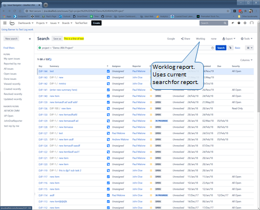
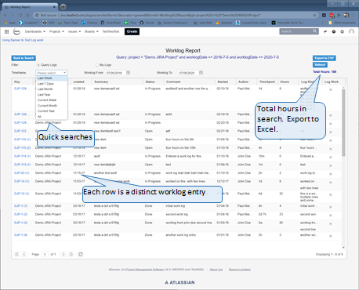

Work Log Reporting
The worklog reporting form group is a single form that shows worklog details for a JQL search. The report is invoked from a button placed on the standard Issue search screen.


Installation
Back to Library